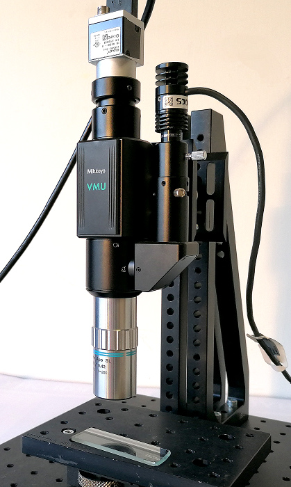
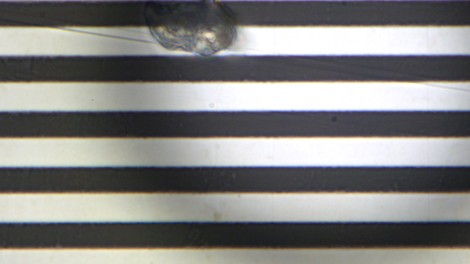
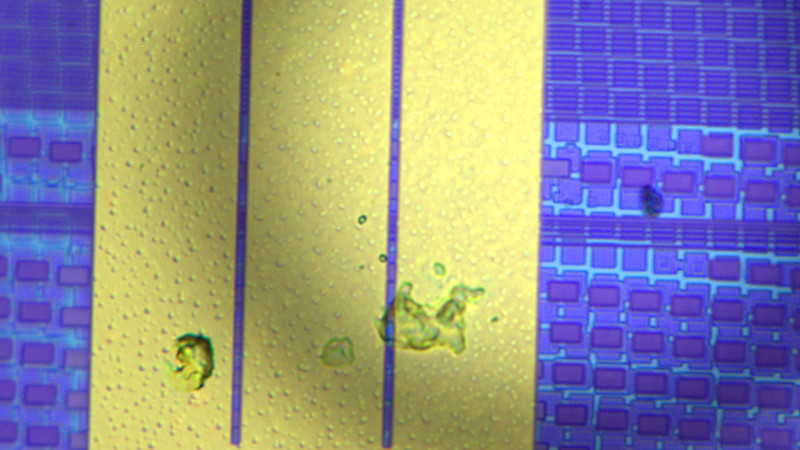
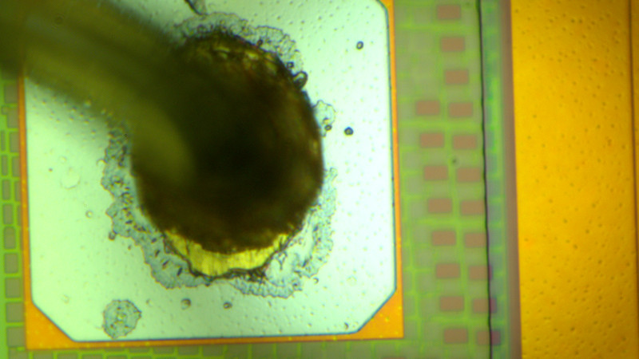
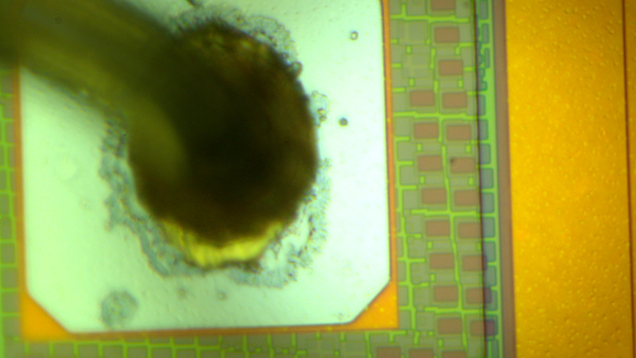
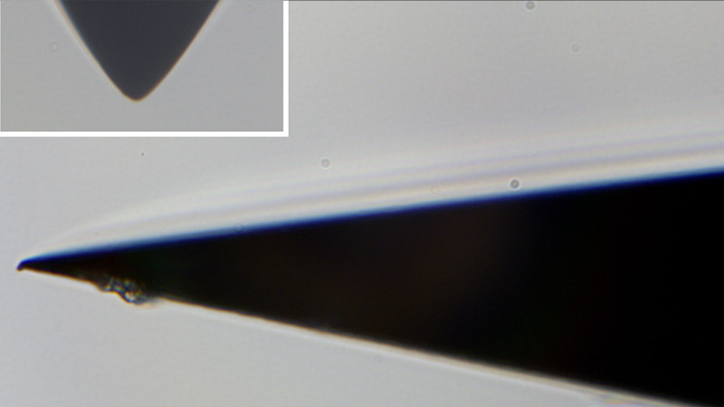
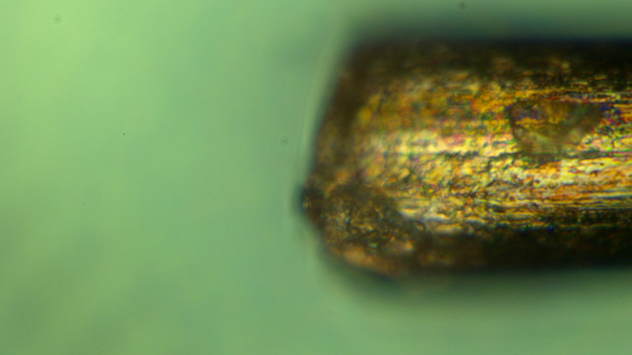
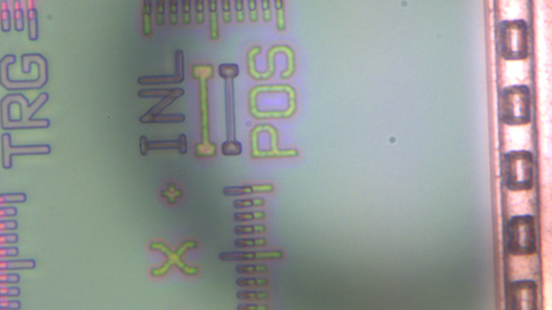

Úvod do video mikroskopových jednotek
Kromě kompletní řady plně vybavených přístrojů pro optická měření má Mitutoyo ve svém portfoliu též optické komponenty umožňující „na míru“ vytvářet mikroskopové jednotky pro širokou oblast použití v průmyslu, případně výzkumu.
V následujícím textu budou popsány základní vlastnosti těchto komponent a dále budou uvedeny i některé příklady jejich použití v praxi.
Hned v úvodu je vhodní zmínit dvě důležité skutečnosti:
- uvedené díly a sestavené mikroskopy nejsou žádná extrémně drahá a složité zařízení. Naopak. Cena může být srovnatelná i s nejnižší řadou Mitutoyo TM dílenských mikroskopů. Samostatné provedení je přitom velmi robustní a kompaktní a jako takové je vhodné i vestavbě do různých strojů a zařízení.
- výsledná mikroskopové sestavy nejsou vybaveny žádnými měřícími funkcemi. Jejich primárním účelem je poskytnout kvalitní zvětšený obraz + specifickou technologickou podporu. O tom pak v dalším textu.
Aby uživatel dosáhl sestavou komponent funkčního celku, je třeba použít:
- objektiv
- tělo mikroskopu
- kameru (příp. okulár)
- osvětlení
Objektiv
Objektiv je základním a rozhodujícím prvkem pro získání obrazu, který požadujeme. Objektivy Mitutoyo jsou obecně velmi kvalitní a světově známé. Základními parametry pro volbu objektivu jsou zejména:
- Zvětšení - určuje stupeň detailu ve výsledném obraze a na tom závislé zorné pole. Platí: čím větší zvětšení (detail), tím menší zorné pole.
- Spektrální přizpůsobení – pro běžná pozorování stačí optika přizpůsobená pro běžné okem viditelné spektrum barev od červené až po fialovou. Řada speciálních a průmyslových aplikací však vyžaduje i použití v oblasti infračerveného světla (např. technologické lasery) nebo ultrafialového světla (pozorování v UV záření aj.). K tomu pak musí být i vhodně zvolené objektivy NIR (blízká infračervená oblast), NUV (blízká ultrafialová oblast) nebo čistě UV.
- Další vlastnosti – mezi další vlastnosti patří například vysoká kvalita pro High Resolution, velká pracovní vzdálenost (odstup od pozorovaného předmětu) a další.
Tělo mikroskopu
Tělo mikroskopu představuje jednak mechanický prvek, který vše drží pohromadě a za který lze výslednou sestavu upevnit do stojanu nebo do zařízení. Za druhé pak tělo představuje optický systém, kterým prochází paprsky z objektivu a který slučuje optické cesty obrazu, osvětlení a případně technologické nadstavby (např. laser). Podle toho, zda je hlavní optická cesta přímá nebo lomená, se rozlišují jednotky na vertikální nebo horizontální.
Kamera nebo okulár
V současné době se na technických mikroskopech používá na výstupu mikroskopu obvykle kamera. Její obraz se pak buď přímo zpracovává počítačem anebo je přenášen na monitor. Mitutoyo nedodává kamery pro tyto mikroskopy, ale dodavatelů je dost, například s námi spolupracující ATE Systems. Kamera musí být sladěna s finálními požadavky na aplikaci. Nemá třeba smysl dávat 10 MPx kameru na aplikaci, kde je k prohlížení použit standardní monitor s rozlišením cca 2 MPx.
Aplikací, kde se předpokládá pozorování objektu okem, je v průmyslové oblasti relativně málo. Zmínit lze například použití v ustavovacích aplikacích, kde se ustavování neděje příliš často a kamera s příslušenstvím pak činí systém zbytečně dražší a složitější. V těchto případech by byl místo kamery použit okulár.
Osvětlení
Osvětlení pozorovaného objektu patří k nezbytnému příslušenství, protože osvětlení okolním přirozeným světlem je téměř vždy nedostatečné. Prakticky každé mikroskopové tělo Mitutoyo je vybaveno vstupem (otvorem) pro zdroj osvětlení (prům. cca 7 mm). Toto osvětlení má formu koaxiálního osvětlení přes objektiv, které je používané i v oblasti klasických optických měřících mikroskopů a strojů. Výhodou tohoto řešení je maximální kompaktnost celé sestavu. Pro zvětšení objektivů v rozsahu 1-5x je možné použít externí prstencové osvětlení, které někdy lépe osvětluje scénu bočním všesměrovým světlem. Pro větší zvětšení už ale prstencové osvětlení není s to dodat dostatečný světelný výkon na velmi malou plochu vzorku, jejíž zobrazení mikroskop zpracovává. Pro dokreslení – u použité sestavy mělo obrazové polo průměr jen 0,2 mm a na tuto plochu byl soustředěn světelný výkon zhruba 1W. Jedná se tedy o výkonový tok řádově 500 W/cm²!
Praktická realizace

V následující části představíme jednu konkrétní modelovou sestavu, složenou z následujících komponent:
| mikroskopové tělo | VMU-V |
| objektiv | M-PLAN APO SL 50x (*) |
| kamera USB barevná 5 MPx (senzor 8,4 x 7,1 mm) | Basler acA2440-35uc |
| osvětlení LED 3W + zdroj | CCS HLV2-22SW-3W |
| mechanická konstrukce + stolek | Thorlabs |
(*) Je třeba říci, že zvětšení 50x je pro technickou (strojírenskou) praxi extrémní a je typické spíše pro elektrotechnický průmysl a vědu. V technické praxi a měření je nejčastěji používaná zvětšení 2x - známe např. z kamerových systémů u TM a MF mikroskopů.

Jako první z pořízených snímků je uveden snímek rastru ze skleněného inkrementálního odměřovacího pravítka Mitutoyo používaného na 3D strojích nebo LH výškoměru. Jeho zlomená část je vidět i na snímku sestavy mikroskopu nahoře. To nám dává základní představu o zobrazovaném poli.
Opakování rastru (světlý + tmavý) je 20 µm, samotný proužek je tedy široký 10 µm. Z toho vyplývá, že kamerou je zobrazováno pole 0,17 x 0,14 mm a velikost jednoho pixelu odpovídá rozměru 0,069 µm. Opačně: 1 µm ~ 15 px.
Potřebujete-li zjistit, jaký objektiv potřebujete pro Vaši aplikaci, je to jednoduché: kamerou zobrazované zorné pole bude: velikost čipu kamery/zvětšení. Při zvětšení objektivu 2 bude tedy mít při použití naší kamery zobrazované zorné pole velikost 4,2 x 3,55 mm.

Díky velkému zvětšení se uvedený objektiv hodí například do oblasti výroby počítačových čipů. V tomto obrázku je vidět struktura obrazového senzoru kamery.

Velké zvětšení s sebou přináší i velmi malou hloubku ostrosti. To je obecný jev projevující se prakticky u všech optických přístrojů. U tohoto obrázku bylo zaostření provedeno na místo bondování (návaru) zlatého kontaktního drátku na kontaktní plochu čipu. Nicméně níže obdélníkové struktury vpravo jsou již mírně neostré.

Stejný obrázek zaostřený na obdélníkové struktury napravo. Tentokrát je zase neostré místo bondování (viz předchozí obrázek). V případě potřeby lze pomocí speciálního SW oba snímky (příp. i více) sloučit a dosáhnout tak výsledného obrazu s "rozšířenou hloubkou ostrosti".

Nyní snímek z oboru mechaniky. Detail hrotu speciální inzulínové injekční jehly. Pro porovnání je vlevo nahoře detail hrotu drsnoměru se zaoblením špičky hrotu 2 µm.

Ustřižený měděný drátek o průměru 77 µm. Díky malé hloubce ostrosti je pozorování válcovitých předmětů poměrně problematické. Zde zaostřeno na povrch drátku.
Využití
Nyní se dostáváme k zásadní otázce - k čemu je to vlastně dobré a jaké je praktické použití?
Optické inspekční a měřící metody jsou stále ne vzestupu. Pro každou aplikaci je pak třeba najít technicky a ekonomicky nejlepší řešení pro jejich realizaci. Realizace optického systému ze "stavebnice" optických komponent Mitutoyo je relativně snadná a i cenově přijatelná.
Pokud cenově porovnáme často prodávaný optický systém s použitím TM mikroskopu spolu s HDMI kamerou s řešením realizovaném s popisovanými VU jednotkami, dostaneme zhruba tyto výsledky:
| Prezentovaná sestava s objektivem M Plan Apo 2×, koaxiální osvětlení | 6.350 € |
| Prezentovaná sestava s objektivem M Plan Apo 2×, osvětlení prstencem | 4.800 € |
| Mitutoyo TM-505B + HDMI6MDPX, cena AKCE | 6.720 € |
| Mitutoyo TM-505B + HDMI6MDPX, cena AKCE, bez mikrom. hlavic | 5.120 € |
POZNÁMKY:
- cena prezentované sestavy je včetně použitých mechanických komponent (900 €).
- s rostoucím zvětšením roste cena objektivu. Objektiv M Plan Apo 2× odpovídá svým zvětšením výslednému zvětšení sestavě na TM mikroskopu, jeho cena je 640 €. Pro srovnání - cena objektivu použitého v prezentované sestavě M-PLAN APO SL 50x je 2.080 €.
Z uvedeného je zřejmé, že z uvedených komponent je možné sestavit vlastní optický systém na míru za cenu i nižší nebo srovnatelnou než je základní srovnávací TM mikroskop. Na posledním řádku je záměrně uvedena cena jeho cena bez mikrometrických hlavic, kterými lze realizovat velmi přesná měření a která prezentovaná sestava pochopitelně též nemá.
Příklady použití
Vestavby
Nejtypičtější oblastí použití uvedených mikroskopových jednotek je použití jako vestavby a součásti technologických zařízení, strojů a přípravků. Klasickým příkladem jsou např. zařízení pro elektronovou litografii, používané v oblasti výroby integrovaných obvodů. Zde je potřeba dosáhnout velké přesnosti sesazení při výrobě jednotlivých vrstev, což se kontroluje právě pomocí vestavěných jednotek.

Sesazovací rastry - svislá a vodorovná stupnice ve středu snímku. Zde na finálním výrobku je vidět přesnost napojení vrstev (žlutá + fialová).
V místních podmínkách lze najít uplatnění v oblasti přesného polohování a ustavování dílů (výrobků) ve strojích a přípravcích, například u malých dílů pro medicínskou techniku, optiku, přesnou mechaniku a dalších. Výhodou jednotek je zejména poměrně malý rozměr optického konce (objektiv) a integrované osvětlení. Dále pak kompaktnost a mechanická robustnost, která je činí relativně málo citlivými na vlivy vnějšího prostředí. Existuje zde jisté podobenství s mikrometrickými hlavicemi. Nikdo nepořizuje mikrometrické hlavice jako samostatně použitelný prvek, nicméně v sestavách poskytují tyto komponenty nenahraditelnou roli.
Technologické nástroje
Mikroskopové jednotky a objektivy jsou použitelné ve spolupráci s YAG lasery a mohou být použity přímo jako výrobní nástroje při výrobě a opravě dílů (např. vadné pixely displejů), nastavování hodnot součástek hybridních IO, bondování přívodů a další. Těla těchto mikroskopů mají dvě hlavní optické cesty, jednu pro vlastní laser a druhou pro kameru, s jejíž pomocí se provádí navádění a ostření systému.
Snímání obrazu ("kukátka")
Existuje mnoho aplikací, kdy není nutné provádět konkrétní měření, ale je třeba provádět vizuální inspekci (včetně možného strojového posouzení na získaném obraze), a to i za zvláštních podmínek. Zvláštními podmínkami může být speciální druh osvětlení (UV), velké zvětšení nebo pracovní vzdálenost a další.
Pokud je třeba provádět měření v získaném obraze, není to problém, existuje celá řada programů ať již free (např. ImageJ) nebo placených pro provádění základních měřičských úkonů, jak je známe např. ze SW v HDMI kameře. Základní a někdy i celkem pokročilý SW je dodáván rovněž jako standardní příslušenství kamer. V souvislosti s kamerovým SW je třeba zmínit strmě rostoucí obor strojového vidění s možnostmi "inteligentního" odhalování vad, rozměrových defektů, třídění a dalších.
Reálné poptávky
Několikrát ročně se setkáváme s poptávkami zejména po samostatných objektivech. Obvykle se jedná o použití ve zvláštních aplikacích a ve výzkumu. Řada poptávek přichází z oblasti výroby elektronických komponent, zejména displejů. Technicky velmi zajímavé je použití objektivu M Plan Apo NIR HR 100x u firmy ELI BEAMLINES (Fyzikální ústav AV ČR v. v. i.), kde bylo třeba při studiu křemíkového detektoru soustředit infračervený laserový paprsek do velmi malého bodu o průměru pod 2 µm.
Odkazy
V oblasti speciálních optických zařízení dlouhodobě spolupracujeme s firmou ATESystem s.r.o., která mj. zapůjčila některé prvky pro uvedenou prezentační sestavu.
Článek: MITUTOYO M PLAN 10X 0.28 OBECTIVE TEST
Článek: A Comparison of All High Magnification Camera Lenses
POZNÁMKA ke snímkům a k fotografiím v článcích. Proti našim snímkům jsou fotografie v článcích velmi ostré a s relativně velkou hloubkou ostrosti. Je to způsobeno jinými podmínkami při pořízení snímků, speciálně velkou clonou a z toho vyplývajícím dlouhým expozičním časem. Kamera pracuje v reálném čase se snímkovou frekvencí 30 Hz. Tím je dán expoziční čas a v souvislosti s tím nemůže být použita velká clona. Mj. v kamerových tělech ani objektivu žádná další clona není. Kvalitu zobrazených snímků ovlivňuje i přesnost nastavení kolmosti optické osy mikroskopu vzhledem k podložce, resp. ke snímanému vzorku. Jakékoliv vyosení znamená osový výškový rozdíl (osa z) a krajové rozostření díky malé hloubce ostrosti.
V případě zájmu
V případě zájmu o technickou (cenovou) nabídku nebo studii proveditelnosti se obraťte na pracovníky našeho místního zastoupení. Záležitost s Vámi zkonzultujeme a navrhneme celkové řešení včetně kamerového systému a následného systému zpracování a vyhodnocování obrazu.